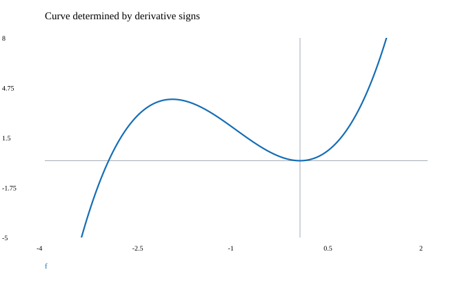

문제 요약
\(y=x^{3} + 3 x^{2}\) 정의역·교점·대칭·점근선·증감·극값·오목성·변곡점을 분석하여 곡선을 그려라.

힌트. 최고차항과 한쪽 극한을 살피고 제곱근에서는 절댓값을 유지한다.
해설.
\(D=\mathbb R\setminus\{\};\quad\text{neither even nor odd}\)
\(f^{\prime}=3 x \left(x + 2\right),\quad f^{\prime\prime}=6 \left(x + 1\right)\)
\(x\text{-intercepts: }(-3,0),\quad (0,0)\)
\(y\text{-intercept: }0\)
\(\text{Increasing: }(-\infty,-2)\cup(0,\infty);\quad\text{decreasing: }(-2,0)\)
\(\text{Concave up: }(-1,\infty);\quad\text{concave down: }(-\infty,-1)\)
\(\text{Local extrema: }\text{max}(-2,4);\quad \text{min}(0,0)\)
\(\text{Inflections: }(-1,2)\)
\(\lim_{x\to-\infty}f=-\infty,\quad\lim_{x\to\infty}f=\infty\)
도함수의 모든 실근과 정의역 경계를 분리하면 각 열린 구간에서 부호가 일정하다. 약분된 인수의 구멍은 원래 정의역에서 계속 제외한다.
최종 답. \(\text{Use the sign intervals and special points above; }\text{no finite or linear asymptotes}\)
검산·주의점. 극한의 방향·정의역·부호를 확인하고 식 또는 도형의 조건을 대조했다.
Problem summary
\(y=x^{3} + 3 x^{2}\) Analyze domain, intercepts, symmetry, asymptotes, monotonicity, extrema, concavity, and inflection points, then sketch the curve.
Hint. Inspect leading terms and one-sided limits; retain absolute values when extracting square roots.
Solution.
\(D=\mathbb R\setminus\{\};\quad\text{neither even nor odd}\)
\(f^{\prime}=3 x \left(x + 2\right),\quad f^{\prime\prime}=6 \left(x + 1\right)\)
\(x\text{-intercepts: }(-3,0),\quad (0,0)\)
\(y\text{-intercept: }0\)
\(\text{Increasing: }(-\infty,-2)\cup(0,\infty);\quad\text{decreasing: }(-2,0)\)
\(\text{Concave up: }(-1,\infty);\quad\text{concave down: }(-\infty,-1)\)
\(\text{Local extrema: }\text{max}(-2,4);\quad \text{min}(0,0)\)
\(\text{Inflections: }(-1,2)\)
\(\lim_{x\to-\infty}f=-\infty,\quad\lim_{x\to\infty}f=\infty\)
All real derivative zeros and domain boundaries partition intervals of constant sign. Canceled factors remain excluded from the original domain.
Final answer. \(\text{Use the sign intervals and special points above; }\text{no finite or linear asymptotes}\)
Check and conditions. Limit direction, domain, and signs were checked against the formula or geometric conditions.